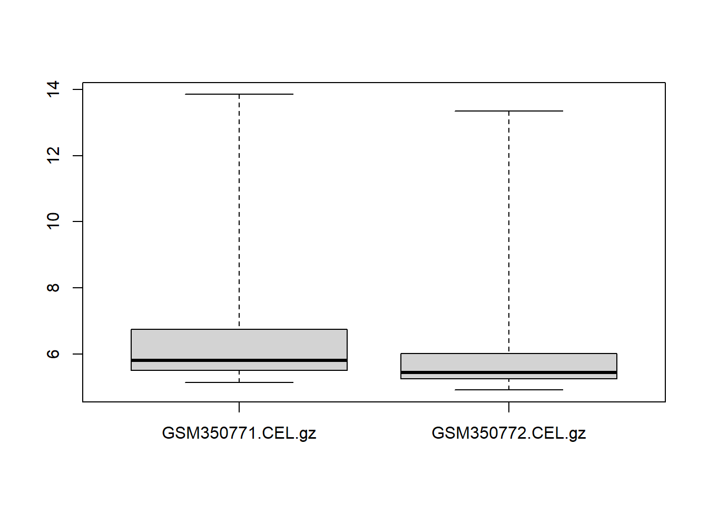

Module 8
The Book of R: Appendix A (packages)
Module 7 review
- External programs
- system2
- Introduction to plots
- plot(runif(50), runif(50)) #x,y scatter plot
- boxplot(runif(50))
Packages
Key R concept
- A place to store a set of functions
- Can create a library of functions
- Easily import the functions (and data) into R by installing the * package
- Packages are available online in package repositories
- The Comprehensive R Archive Network (CRAN) - https://cran.r-project.org/
- Bioconductor - https://www.bioconductor.org/
Installing packages
# This downloads the package to your computer
# Permanent download – you only need to do this once
# select a mirror – choose someplace close (faster internet connection), or just the first one
install.packages("ggplot2")# This loads the package so you can use it
# Need to do this each time you restart R
# Sometimes other packages that this package needs will automatically be downloaded – could take time.
library(ggplot2)
#now we can use the functions in the package
ggplot(iris, aes(x = Sepal.Length, fill = Species)) + geom_density(alpha = .3)
Package management
#List all installed packages
installed.packages()## Package LibPath Version Priority
## acepack "acepack" "D:/Program Files/R/R-3.6.3/library" "1.4.1" NA
## affy "affy" "D:/Program Files/R/R-3.6.3/library" "1.64.0" NA
## affyio "affyio" "D:/Program Files/R/R-3.6.3/library" "1.56.0" NA
## annotate "annotate" "D:/Program Files/R/R-3.6.3/library" "1.64.0" NA
## AnnotationDbi "AnnotationDbi" "D:/Program Files/R/R-3.6.3/library" "1.48.0" NA
## AnnotationFilter "AnnotationFilter" "D:/Program Files/R/R-3.6.3/library" "1.10.0" NA
## ape "ape" "D:/Program Files/R/R-3.6.3/library" "5.3" NA
## askpass "askpass" "D:/Program Files/R/R-3.6.3/library" "1.1" NA
## assertthat "assertthat" "D:/Program Files/R/R-3.6.3/library" "0.2.1" NA
## backports "backports" "D:/Program Files/R/R-3.6.3/library" "1.1.6" NA
## base "base" "D:/Program Files/R/R-3.6.3/library" "3.6.3" "base"
## base64enc "base64enc" "D:/Program Files/R/R-3.6.3/library" "0.1-3" NA
## beachmat "beachmat" "D:/Program Files/R/R-3.6.3/library" "2.2.1" NA
## beeswarm "beeswarm" "D:/Program Files/R/R-3.6.3/library" "0.2.3" NA
## BH "BH" "D:/Program Files/R/R-3.6.3/library" "1.72.0-3" NA
## bibtex "bibtex" "D:/Program Files/R/R-3.6.3/library" "0.4.2.2" NA
## Biobase "Biobase" "D:/Program Files/R/R-3.6.3/library" "2.46.0" NA
## BiocFileCache "BiocFileCache" "D:/Program Files/R/R-3.6.3/library" "1.10.2" NA
## BiocGenerics "BiocGenerics" "D:/Program Files/R/R-3.6.3/library" "0.32.0" NA
## BiocManager "BiocManager" "D:/Program Files/R/R-3.6.3/library" "1.30.10" NA
## BiocNeighbors "BiocNeighbors" "D:/Program Files/R/R-3.6.3/library" "1.4.2" NA
## BiocParallel "BiocParallel" "D:/Program Files/R/R-3.6.3/library" "1.20.1" NA
## BiocSingular "BiocSingular" "D:/Program Files/R/R-3.6.3/library" "1.2.2" NA
## BiocVersion "BiocVersion" "D:/Program Files/R/R-3.6.3/library" "3.10.1" NA
## biomaRt "biomaRt" "D:/Program Files/R/R-3.6.3/library" "2.42.1" NA
## Biostrings "Biostrings" "D:/Program Files/R/R-3.6.3/library" "2.54.0" NA
## bit "bit" "D:/Program Files/R/R-3.6.3/library" "1.1-15.2" NA
## bit64 "bit64" "D:/Program Files/R/R-3.6.3/library" "0.9-7" NA
## bitops "bitops" "D:/Program Files/R/R-3.6.3/library" "1.0-6" NA
## blob "blob" "D:/Program Files/R/R-3.6.3/library" "1.2.1" NA
## boot "boot" "D:/Program Files/R/R-3.6.3/library" "1.3-25" "recommended"
## brew "brew" "D:/Program Files/R/R-3.6.3/library" "1.0-6" NA
## callr "callr" "D:/Program Files/R/R-3.6.3/library" "3.4.3" NA
## caTools "caTools" "D:/Program Files/R/R-3.6.3/library" "1.18.0" NA
## CCInx "CCInx" "D:/Program Files/R/R-3.6.3/library" "0.5.1" NA
## checkmate "checkmate" "D:/Program Files/R/R-3.6.3/library" "2.0.0" NA
## class "class" "D:/Program Files/R/R-3.6.3/library" "7.3-17" "recommended"
## cli "cli" "D:/Program Files/R/R-3.6.3/library" "2.0.2" NA
## clipr "clipr" "D:/Program Files/R/R-3.6.3/library" "0.7.0" NA
## clisymbols "clisymbols" "D:/Program Files/R/R-3.6.3/library" "1.2.0" NA
## cluster "cluster" "D:/Program Files/R/R-3.6.3/library" "2.1.0" "recommended"
## codetools "codetools" "D:/Program Files/R/R-3.6.3/library" "0.2-16" "recommended"
## colorspace "colorspace" "D:/Program Files/R/R-3.6.3/library" "1.4-1" NA
## commonmark "commonmark" "D:/Program Files/R/R-3.6.3/library" "1.7" NA
## compiler "compiler" "D:/Program Files/R/R-3.6.3/library" "3.6.3" "base"
## covr "covr" "D:/Program Files/R/R-3.6.3/library" "3.5.0" NA
## cowplot "cowplot" "D:/Program Files/R/R-3.6.3/library" "1.0.0" NA
## crayon "crayon" "D:/Program Files/R/R-3.6.3/library" "1.3.4" NA
## crosstalk "crosstalk" "D:/Program Files/R/R-3.6.3/library" "1.1.0.1" NA
## curl "curl" "D:/Program Files/R/R-3.6.3/library" "4.3" NA
## data.table "data.table" "D:/Program Files/R/R-3.6.3/library" "1.12.8" NA
## datasets "datasets" "D:/Program Files/R/R-3.6.3/library" "3.6.3" "base"
## DBI "DBI" "D:/Program Files/R/R-3.6.3/library" "1.1.0" NA
## dbplyr "dbplyr" "D:/Program Files/R/R-3.6.3/library" "1.4.3" NA
## DelayedArray "DelayedArray" "D:/Program Files/R/R-3.6.3/library" "0.12.3" NA
## DelayedMatrixStats "DelayedMatrixStats" "D:/Program Files/R/R-3.6.3/library" "1.8.0" NA
## desc "desc" "D:/Program Files/R/R-3.6.3/library" "1.2.0" NA
## DESeq2 "DESeq2" "D:/Program Files/R/R-3.6.3/library" "1.26.0" NA
## devtools "devtools" "D:/Program Files/R/R-3.6.3/library" "2.3.0" NA
## digest "digest" "D:/Program Files/R/R-3.6.3/library" "0.6.25" NA
## dplyr "dplyr" "D:/Program Files/R/R-3.6.3/library" "0.8.5" NA
## dqrng "dqrng" "D:/Program Files/R/R-3.6.3/library" "0.2.1" NA
## Depends
## acepack NA
## affy "R (>= 2.8.0), BiocGenerics (>= 0.1.12), Biobase (>= 2.5.5)"
## affyio "R (>= 2.6.0)"
## annotate "R (>= 2.10), AnnotationDbi (>= 1.27.5), XML"
## AnnotationDbi "R (>= 2.7.0), methods, utils, stats4, BiocGenerics (>=\n0.29.2), Biobase (>= 1.17.0), IRanges"
## AnnotationFilter "R (>= 3.4.0)"
## ape "R (>= 3.2.0)"
## askpass NA
## assertthat NA
## backports "R (>= 3.0.0)"
## base NA
## base64enc "R (>= 2.9.0)"
## beachmat NA
## beeswarm NA
## BH NA
## bibtex "R (>= 3.0.2)"
## Biobase "R (>= 2.10), BiocGenerics (>= 0.27.1), utils"
## BiocFileCache "R (>= 3.4.0), dbplyr (>= 1.0.0)"
## BiocGenerics "R (>= 3.6.0), methods, utils, graphics, stats, parallel"
## BiocManager NA
## BiocNeighbors NA
## BiocParallel "methods"
## BiocSingular NA
## BiocVersion "R (>= 3.6.0)"
## biomaRt "methods"
## Biostrings "R (>= 3.5.0), methods, BiocGenerics (>= 0.31.5), S4Vectors (>=\n0.21.13), IRanges, XVector (>= 0.23.2)"
## bit "R (>= 2.9.2)"
## bit64 "R (>= 3.0.1), bit (>= 1.1-12), utils, methods, stats"
## bitops NA
## blob NA
## boot "R (>= 3.0.0), graphics, stats"
## brew NA
## callr NA
## caTools "R (>= 3.6.0)"
## CCInx "shiny (>= 1.1.0)"
## checkmate "R (>= 3.0.0)"
## class "R (>= 3.0.0), stats, utils"
## cli "R (>= 2.10)"
## clipr NA
## clisymbols NA
## cluster "R (>= 3.3.0)"
## codetools "R (>= 2.1)"
## colorspace "R (>= 3.0.0), methods"
## commonmark NA
## compiler NA
## covr "R (>= 3.1.0), methods"
## cowplot "R (>= 3.5.0)"
## crayon NA
## crosstalk NA
## curl "R (>= 3.0.0)"
## data.table "R (>= 3.1.0)"
## datasets NA
## DBI "methods, R (>= 3.0.0)"
## dbplyr "R (>= 3.1)"
## DelayedArray "R (>= 3.4), methods, stats4, matrixStats, BiocGenerics (>=\n0.31.5), S4Vectors (>= 0.24.4), IRanges (>= 2.17.3),\nBiocParallel"
## DelayedMatrixStats "DelayedArray (>= 0.11.1)"
## desc "R (>= 3.1.0)"
## DESeq2 "S4Vectors (>= 0.23.18), IRanges, GenomicRanges,\nSummarizedExperiment (>= 1.1.6)"
## devtools "R (>= 3.0.2), usethis (>= 1.6.0)"
## digest "R (>= 3.1.0)"
## dplyr "R (>= 3.2.0)"
## dqrng "R (>= 3.1.0)"
## Imports
## acepack NA
## affy "affyio (>= 1.13.3), BiocManager, graphics, grDevices, methods,\npreprocessCore, stats, utils, zlibbioc"
## affyio "zlibbioc, methods"
## annotate "Biobase, DBI, xtable, graphics, utils, stats, methods,\nBiocGenerics (>= 0.13.8), RCurl"
## AnnotationDbi "DBI, RSQLite, S4Vectors (>= 0.9.25)"
## AnnotationFilter "utils, methods, GenomicRanges, lazyeval"
## ape "nlme, lattice, graphics, methods, stats, tools, utils,\nparallel, Rcpp (>= 0.12.0)"
## askpass "sys (>= 2.1)"
## assertthat "tools"
## backports "utils"
## base NA
## base64enc NA
## beachmat "methods, DelayedArray, BiocGenerics, Matrix"
## beeswarm "stats, graphics, grDevices, utils"
## BH NA
## bibtex "stringr, utils"
## Biobase "methods"
## BiocFileCache "methods, stats, utils, dplyr, RSQLite, DBI, rappdirs, curl,\nhttr"
## BiocGenerics "methods, utils, graphics, stats, parallel"
## BiocManager "utils"
## BiocNeighbors "Rcpp, S4Vectors, BiocParallel, stats, methods, Matrix"
## BiocParallel "stats, utils, futile.logger, parallel, snow"
## BiocSingular "BiocGenerics, S4Vectors, Matrix, methods, utils, DelayedArray,\nBiocParallel, irlba, rsvd, Rcpp"
## BiocVersion NA
## biomaRt "utils, XML, AnnotationDbi, progress, stringr, httr, openssl,\nBiocFileCache, rappdirs"
## Biostrings "graphics, methods, stats, utils"
## bit NA
## bit64 NA
## bitops NA
## blob "methods, rlang, vctrs (>= 0.2.1)"
## boot NA
## brew NA
## callr "processx (>= 3.4.0), R6, utils"
## caTools "bitops"
## CCInx "scales (>= 1.0.0),\nRColorBrewer (>= 1.1-2),\npbapply (>= 1.3.4),\ngrDevices(>= 3.5.1)"
## checkmate "backports (>= 1.1.0), utils"
## class "MASS"
## cli "assertthat, crayon (>= 1.3.4), glue, methods, utils, fansi"
## clipr "utils"
## clisymbols NA
## cluster "graphics, grDevices, stats, utils"
## codetools NA
## colorspace "graphics, grDevices, stats"
## commonmark NA
## compiler NA
## covr "digest, stats, utils, jsonlite, rex, httr, crayon, withr (>=\n1.0.2), yaml"
## cowplot "ggplot2 (> 2.2.1), grid, gtable, grDevices, methods, rlang,\nscales, utils"
## crayon "grDevices, methods, utils"
## crosstalk "htmltools (>= 0.3.6), jsonlite, lazyeval, R6"
## curl NA
## data.table "methods"
## datasets NA
## DBI NA
## dbplyr "assertthat (>= 0.2.0), DBI (>= 1.0.0), dplyr (>= 0.8.0), glue\n(>= 1.2.0), lifecycle, methods, purrr (>= 0.2.5), R6 (>=\n2.2.2), rlang (>= 0.2.0), tibble (>= 1.4.2), tidyselect (>=\n0.2.4), utils"
## DelayedArray "stats, Matrix"
## DelayedMatrixStats "methods, matrixStats (>= 0.55.0), Matrix, S4Vectors (>=\n0.17.5), IRanges, HDF5Array (>= 1.7.10), BiocParallel"
## desc "assertthat, utils, R6, crayon, rprojroot"
## DESeq2 "BiocGenerics (>= 0.7.5), Biobase, BiocParallel, genefilter,\nmethods, stats4, locfit, geneplotter, ggplot2, Hmisc, Rcpp (>=\n0.11.0)"
## devtools "callr (>= 3.4.3), cli (>= 2.0.2), covr (>= 3.5.0), crayon (>=\n1.3.4), desc (>= 1.2.0), digest (>= 0.6.25), DT (>= 0.13),\nellipsis (>= 0.3.0), glue (>= 1.4.0), git2r (>= 0.26.1), httr\n(>= 1.4.1), jsonlite (>= 1.6.1), memoise (>= 1.1.0), pkgbuild\n(>= 1.0.6), pkgload (>= 1.0.2), rcmdcheck (>= 1.3.3), remotes\n(>= 2.1.1), rlang (>= 0.4.5), roxygen2 (>= 7.1.0), rstudioapi\n(>= 0.11), rversions (>= 2.0.1), sessioninfo (>= 1.1.1), stats,\ntestthat (>= 2.3.2), tools, utils, withr (>= 2.1.2)"
## digest "utils"
## dplyr "ellipsis, assertthat (>= 0.2.0), glue (>= 1.3.0), magrittr (>=\n1.5), methods, pkgconfig, R6, Rcpp (>= 1.0.1), rlang (>=\n0.4.0), tibble (>= 2.0.0), tidyselect (>= 0.2.5), utils"
## dqrng "Rcpp (>= 0.12.16)"
## LinkingTo
## acepack NA
## affy "preprocessCore"
## affyio NA
## annotate NA
## AnnotationDbi NA
## AnnotationFilter NA
## ape "Rcpp"
## askpass NA
## assertthat NA
## backports NA
## base NA
## base64enc NA
## beachmat NA
## beeswarm NA
## BH NA
## bibtex NA
## Biobase NA
## BiocFileCache NA
## BiocGenerics NA
## BiocManager NA
## BiocNeighbors "Rcpp, RcppAnnoy, RcppHNSW"
## BiocParallel "BH"
## BiocSingular "Rcpp, beachmat"
## BiocVersion NA
## biomaRt NA
## Biostrings "S4Vectors, IRanges, XVector"
## bit NA
## bit64 NA
## bitops NA
## blob NA
## boot NA
## brew NA
## callr NA
## caTools NA
## CCInx NA
## checkmate NA
## class NA
## cli NA
## clipr NA
## clisymbols NA
## cluster NA
## codetools NA
## colorspace NA
## commonmark NA
## compiler NA
## covr NA
## cowplot NA
## crayon NA
## crosstalk NA
## curl NA
## data.table NA
## datasets NA
## DBI NA
## dbplyr NA
## DelayedArray "S4Vectors"
## DelayedMatrixStats NA
## desc NA
## DESeq2 "Rcpp, RcppArmadillo"
## devtools NA
## digest NA
## dplyr "BH, plogr (>= 0.2.0), Rcpp (>= 1.0.1)"
## dqrng "Rcpp, BH (>= 1.64.0-1), sitmo (>= 2.0.0)"
## Suggests
## acepack "testthat"
## affy "tkWidgets (>= 1.19.0), affydata, widgetTools"
## affyio NA
## annotate "hgu95av2.db, genefilter, Biostrings (>= 2.25.10), IRanges,\nrae230a.db, rae230aprobe, tkWidgets, GO.db, org.Hs.eg.db,\norg.Mm.eg.db, hom.Hs.inp.db, humanCHRLOC, Rgraphviz, RUnit,"
## AnnotationDbi "hgu95av2.db, GO.db, org.Sc.sgd.db, org.At.tair.db, KEGG.db,\nRUnit, TxDb.Hsapiens.UCSC.hg19.knownGene, hom.Hs.inp.db,\norg.Hs.eg.db, reactome.db, AnnotationForge, graph,\nEnsDb.Hsapiens.v75, BiocStyle, knitr"
## AnnotationFilter "BiocStyle, knitr, testthat, RSQLite, org.Hs.eg.db"
## ape "gee, expm, igraph"
## askpass "testthat"
## assertthat "testthat, covr"
## backports NA
## base "methods"
## base64enc NA
## beachmat "testthat, BiocStyle, knitr, rmarkdown, devtools"
## beeswarm NA
## BH NA
## bibtex "testthat"
## Biobase "tools, tkWidgets, ALL, RUnit, golubEsets"
## BiocFileCache "testthat, knitr, BiocStyle, rmarkdown, rtracklayer"
## BiocGenerics "Biobase, S4Vectors, IRanges, GenomicRanges, DelayedArray,\nBiostrings, Rsamtools, AnnotationDbi, oligoClasses, oligo,\naffyPLM, flowClust, affy, DESeq2, MSnbase, annotate, RUnit"
## BiocManager "BiocStyle, BiocVersion, remotes, testthat, withr, curl, knitr"
## BiocNeighbors "testthat, BiocStyle, knitr, rmarkdown, FNN, RcppAnnoy,\nRcppHNSW"
## BiocParallel "BiocGenerics, tools, foreach, BatchJobs, BBmisc, doParallel,\nRmpi, GenomicRanges, RNAseqData.HNRNPC.bam.chr14,\nTxDb.Hsapiens.UCSC.hg19.knownGene, VariantAnnotation,\nRsamtools, GenomicAlignments, ShortRead, codetools, RUnit,\nBiocStyle, knitr, batchtools, data.table"
## BiocSingular "testthat, BiocStyle, knitr, rmarkdown, beachmat"
## BiocVersion NA
## biomaRt "annotate, BiocStyle, knitr, rmarkdown, testthat"
## Biostrings "BSgenome (>= 1.13.14), BSgenome.Celegans.UCSC.ce2 (>=\n1.3.11), BSgenome.Dmelanogaster.UCSC.dm3 (>= 1.3.11),\nBSgenome.Hsapiens.UCSC.hg18, drosophila2probe, hgu95av2probe,\nhgu133aprobe, GenomicFeatures (>= 1.3.14), hgu95av2cdf, affy\n(>= 1.41.3), affydata (>= 1.11.5), RUnit"
## bit NA
## bit64 NA
## bitops NA
## blob "covr, crayon, pillar (>= 1.2.1), testthat"
## boot "MASS, survival"
## brew NA
## callr "cliapp, covr, crayon, fansi, pingr, ps, rprojroot, spelling,\ntestthat, tibble, withr"
## caTools "MASS, rpart"
## CCInx "knitr (>= 1.22),\nrmarkdown,\nscClustViz (>= 1.0.0)"
## checkmate "R6, fastmatch, data.table (>= 1.9.8), devtools, ggplot2,\nknitr, magrittr, microbenchmark, rmarkdown, testthat (>=\n0.11.0), tinytest (>= 1.1.0), tibble"
## class NA
## cli "callr, covr, htmlwidgets, knitr, mockery, rmarkdown,\nrstudioapi, prettycode (>= 1.1.0), testthat, withr"
## clipr "covr, knitr, rmarkdown, rstudioapi (>= 0.5), testthat (>=\n2.0.0)"
## clisymbols "testthat"
## cluster "MASS, Matrix"
## codetools NA
## colorspace "datasets, utils, KernSmooth, MASS, kernlab, mvtnorm, vcd,\ntcltk, shiny, shinyjs, ggplot2, dplyr, scales, grid, png, jpeg,\nknitr, rmarkdown, RColorBrewer, rcartocolor, scico, viridis,\nwesanderson"
## commonmark "curl, testthat, xml2"
## compiler NA
## covr "R6, knitr, rmarkdown, htmltools, DT (>= 0.2), testthat,\nrlang, rstudioapi (>= 0.2), xml2 (>= 1.0.0), parallel, memoise,\nmockery"
## cowplot "Cairo, covr, dplyr, forcats, gridGraphics (>= 0.4-0), knitr,\nlattice, magick, maps, PASWR, rmarkdown, testthat (>= 1.0.0),\ntidyr, vdiffr (>= 0.3.0), VennDiagram"
## crayon "mockery, rstudioapi, testthat, withr"
## crosstalk "shiny, ggplot2, testthat (>= 2.1.0)"
## curl "spelling, testthat (>= 1.0.0), knitr, jsonlite, rmarkdown,\nmagrittr, httpuv (>= 1.4.4), webutils"
## data.table "bit64, curl, R.utils, knitr, xts, nanotime, zoo, yaml"
## datasets NA
## DBI "blob, covr, hms, knitr, magrittr, rmarkdown, rprojroot,\nRSQLite (>= 1.1-2), testthat, xml2"
## dbplyr "bit64, covr, knitr, Lahman, nycflights13, RMariaDB (>=\n1.0.2), rmarkdown, RPostgres (>= 1.1.3), RSQLite (>= 2.1.0),\ntestthat (>= 2.0.0)"
## DelayedArray "HDF5Array, genefilter, SummarizedExperiment, airway, pryr,\nDelayedMatrixStats, knitr, BiocStyle, RUnit"
## DelayedMatrixStats "testthat, knitr, rmarkdown, covr, BiocStyle, microbenchmark,\nprofmem"
## desc "covr, testthat, whoami, withr"
## DESeq2 "testthat, knitr, rmarkdown, vsn, pheatmap, RColorBrewer, IHW,\napeglm, ashr, tximport, tximeta, tximportData, readr, pbapply,\nairway, pasilla (>= 0.2.10)"
## devtools "BiocManager (>= 1.30.10), curl (>= 4.3), foghorn (>= 1.1.5),\ngmailr (>= 1.0.0), knitr (>= 1.28), lintr (>= 2.0.1), mockery\n(>= 0.4.2), pingr (>= 2.0.0), MASS, pkgdown (>= 1.5.1), rhub\n(>= 1.1.1), rmarkdown (>= 2.1), spelling (>= 2.1)"
## digest "tinytest, knitr, rmarkdown"
## dplyr "bit64, callr, covr, crayon (>= 1.3.4), DBI, dbplyr, dtplyr,\nggplot2, hms, knitr, Lahman, lubridate, MASS, mgcv,\nmicrobenchmark, nycflights13, rmarkdown, RMySQL, RPostgreSQL,\nRSQLite, testthat, withr, broom, purrr, readr"
## dqrng "testthat, knitr, rmarkdown"
## Enhances License License_is_FOSS License_restricts_use
## acepack NA "MIT + file LICENSE" NA NA
## affy NA "LGPL (>= 2.0)" NA NA
## affyio NA "LGPL (>= 2)" NA NA
## annotate NA "Artistic-2.0" NA NA
## AnnotationDbi NA "Artistic-2.0" NA NA
## AnnotationFilter NA "Artistic-2.0" NA NA
## ape NA "GPL (>= 2)" NA NA
## askpass NA "MIT + file LICENSE" NA NA
## assertthat NA "GPL-3" NA NA
## backports NA "GPL-2 | GPL-3" NA NA
## base NA "Part of R 3.6.3" NA NA
## base64enc "png" "GPL-2 | GPL-3" NA NA
## beachmat NA "GPL-3" NA NA
## beeswarm NA "Artistic-2.0" NA NA
## BH NA "BSL-1.0" NA NA
## bibtex NA "GPL (>= 2)" NA NA
## Biobase NA "Artistic-2.0" NA NA
## BiocFileCache NA "Artistic-2.0" NA NA
## BiocGenerics NA "Artistic-2.0" NA NA
## BiocManager NA "Artistic-2.0" NA NA
## BiocNeighbors NA "GPL-3" NA NA
## BiocParallel NA "GPL-2 | GPL-3" NA NA
## BiocSingular NA "GPL-3" NA NA
## BiocVersion NA "Artistic-2.0" NA NA
## biomaRt NA "Artistic-2.0" NA NA
## Biostrings "Rmpi" "Artistic-2.0" NA NA
## bit NA "GPL-2" NA NA
## bit64 NA "GPL-2" NA NA
## bitops NA "GPL (>= 2)" NA NA
## blob NA "GPL-3" NA NA
## boot NA "Unlimited" NA NA
## brew NA "GPL-2" NA NA
## callr NA "MIT + file LICENSE" NA NA
## caTools NA "GPL-3" NA NA
## CCInx NA "MIT + file LICENSE" NA NA
## checkmate NA "BSD_3_clause + file LICENSE" NA NA
## class NA "GPL-2 | GPL-3" NA NA
## cli NA "MIT + file LICENSE" NA NA
## clipr NA "GPL-3" NA NA
## clisymbols NA "MIT + file LICENSE" NA NA
## cluster NA "GPL (>= 2)" NA NA
## codetools NA "GPL" NA NA
## colorspace NA "BSD_3_clause + file LICENSE" NA NA
## commonmark NA "BSD_2_clause + file LICENSE" NA NA
## compiler NA "Part of R 3.6.3" NA NA
## covr NA "GPL-3" NA NA
## cowplot NA "GPL-2" NA NA
## crayon NA "MIT + file LICENSE" NA NA
## crosstalk NA "MIT + file LICENSE" NA NA
## curl NA "MIT + file LICENSE" NA NA
## data.table NA "MPL-2.0 | file LICENSE" NA NA
## datasets NA "Part of R 3.6.3" NA NA
## DBI NA "LGPL (>= 2.1)" NA NA
## dbplyr NA "MIT + file LICENSE" NA NA
## DelayedArray NA "Artistic-2.0" NA NA
## DelayedMatrixStats NA "MIT + file LICENSE" NA NA
## desc NA "MIT + file LICENSE" NA NA
## DESeq2 NA "LGPL (>= 3)" NA NA
## devtools NA "GPL (>= 2)" NA NA
## digest NA "GPL (>= 2)" NA NA
## dplyr NA "MIT + file LICENSE" NA NA
## dqrng NA "AGPL-3 | file LICENSE" NA NA
## OS_type MD5sum NeedsCompilation Built
## acepack NA NA "yes" "3.6.3"
## affy NA NA "yes" "3.6.1"
## affyio NA NA "yes" "3.6.1"
## annotate NA NA "no" "3.6.1"
## AnnotationDbi NA NA "no" "3.6.1"
## AnnotationFilter NA NA "no" "3.6.1"
## ape NA NA "yes" "3.6.3"
## askpass NA NA "yes" "3.6.3"
## assertthat NA NA "no" "3.6.3"
## backports NA NA "yes" "3.6.3"
## base NA NA NA "3.6.3"
## base64enc NA NA "yes" "3.6.0"
## beachmat NA NA "yes" "3.6.1"
## beeswarm NA NA "no" "3.6.0"
## BH NA NA "no" "3.6.2"
## bibtex NA NA "yes" "3.6.3"
## Biobase NA NA "yes" "3.6.1"
## BiocFileCache NA NA "no" "3.6.1"
## BiocGenerics NA NA "no" "3.6.1"
## BiocManager NA NA "no" "3.6.3"
## BiocNeighbors NA NA "yes" "3.6.2"
## BiocParallel NA NA "yes" "3.6.2"
## BiocSingular NA NA "yes" "3.6.2"
## BiocVersion NA NA "no" "3.6.0"
## biomaRt NA NA "no" "3.6.3"
## Biostrings NA NA "yes" "3.6.1"
## bit NA NA "yes" "3.6.2"
## bit64 NA NA "yes" "3.6.2"
## bitops NA NA "yes" "3.6.0"
## blob NA NA "no" "3.6.3"
## boot NA NA "no" "3.6.3"
## brew NA NA NA "3.6.0"
## callr NA NA "no" "3.6.3"
## caTools NA NA "yes" "3.6.3"
## CCInx NA NA NA "3.6.3"
## checkmate NA NA "yes" "3.6.3"
## class NA NA "yes" "3.6.3"
## cli NA NA "no" "3.6.3"
## clipr NA NA "no" "3.6.3"
## clisymbols NA NA "no" "3.6.3"
## cluster NA NA "yes" "3.6.3"
## codetools NA NA "no" "3.6.3"
## colorspace NA NA "yes" "3.6.1"
## commonmark NA NA "yes" "3.6.3"
## compiler NA NA NA "3.6.3"
## covr NA NA "yes" "3.6.3"
## cowplot NA NA "no" "3.6.3"
## crayon NA NA "no" "3.6.3"
## crosstalk NA NA "no" "3.6.3"
## curl NA NA "yes" "3.6.3"
## data.table NA NA "yes" "3.6.3"
## datasets NA NA NA "3.6.3"
## DBI NA NA "no" "3.6.3"
## dbplyr NA NA "no" "3.6.3"
## DelayedArray NA NA "yes" "3.6.3"
## DelayedMatrixStats NA NA "no" "3.6.1"
## desc NA NA "no" "3.6.3"
## DESeq2 NA NA "yes" "3.6.1"
## devtools NA NA "no" "3.6.3"
## digest NA NA "yes" "3.6.3"
## dplyr NA NA "yes" "3.6.3"
## dqrng NA NA "yes" "3.6.3"
## [ reached getOption("max.print") -- omitted 234 rows ]#uninstall a package
#e.g. remove.packages(ggplot2)
#remove.packages(pkgs, lib)
#Lists packages that could be updated
old.packages()## Package LibPath Installed Built ReposVer Repository
## backports "backports" "D:/Program Files/R/R-3.6.3/library" "1.1.6" "3.6.3" "1.1.7" "https://cran.rstudio.com/src/contrib"
## ellipsis "ellipsis" "D:/Program Files/R/R-3.6.3/library" "0.3.0" "3.6.3" "0.3.1" "https://cran.rstudio.com/src/contrib"
## glue "glue" "D:/Program Files/R/R-3.6.3/library" "1.4.0" "3.6.3" "1.4.1" "https://cran.rstudio.com/src/contrib"
## ps "ps" "D:/Program Files/R/R-3.6.3/library" "1.3.2" "3.6.3" "1.3.3" "https://cran.rstudio.com/src/contrib"
## scales "scales" "D:/Program Files/R/R-3.6.3/library" "1.1.0" "3.6.3" "1.1.1" "https://cran.rstudio.com/src/contrib"
## tidyselect "tidyselect" "D:/Program Files/R/R-3.6.3/library" "1.0.0" "3.6.3" "1.1.0" "https://cran.rstudio.com/src/contrib"
## vctrs "vctrs" "D:/Program Files/R/R-3.6.3/library" "0.2.4" "3.6.3" "0.3.0" "https://cran.rstudio.com/src/contrib"#Update all old packages
#R will likely ask you questions about which versions to installupdate.packages()Package documentation
- Website
- Vignette
- PDF file taking you through an example of the package functionality that you can follow
- The first documentation you should review for any package
Example: kinship2 package
install.packages("kinship2")library(kinship2)## Loading required package: Matrix## Loading required package: quadprogdata(sample.ped) #load sample data
head(sample.ped)pedAll = pedigree(id=sample.ped$id, dadid=sample.ped$father, momid=sample.ped$mother, sex=sample.ped$sex, famid=sample.ped$ped)
ped2basic <- pedAll['2']
plot(ped2basic)df2 <- sample.ped[sample.ped$ped==2,]
id2 <- paste(df2$id, c("John", "Linda", "Jack", "Rachel", "Joe", "Deb", "Lucy", "Ken", "Barb", "Mike", "Matt", "Mindy", "Mark", "George"), sep="\n")
plot(ped2basic, col=ifelse(df2$avail, 2, 1), id=id2)Bioconductor
Over 1000 bioinformatics packages
Gene expression
- Import Affymetrix, Illumina, Nimblegen, Agilent, and other platforms. Perform quality assessment, normalization, differential expression, clustering, classification, gene set enrichment, genetical genomics and other workflows for expression, exon, copy number, SNP, methylation and other assays. Access GEO, ArrayExpress, Biomart, UCSC, and other community resources.
High Throughput Assays
- Import, transform, edit, analyze and visualize flow cytometric, mass spec, HTqPCR, cell-based, and other assays.
Sequence Data
- Import fasta, fastq, ELAND, MAQ, BWA, Bowtie, BAM, gff, bed, wig, and other sequence formats. Trim, transform, align, and manipulate sequences. Perform quality assessment, ChIP-seq, differential expression, RNA-seq, and other workflows. Access the Sequence Read Archive.
Annotation
- Use microarray probe, gene, pathway, gene ontology, homology and other annotations. Access GO, KEGG, NCBI, Biomart, UCSC, vendor, and other sources.
Creating your own package
#Install needed packages
install.packages("devtools")
library("devtools")
install.packages("roxygen2")
library(roxygen2)#Create a directory for your package
setwd("parent_directory")
#Create the directory 'mypackage' inside of 'parent_directory'
create("mypackage")- Save functions in a file in:
- parent_directory/mypackage/R
- Example – copy the following files into this folder
- lengthfunction.r
- regexfunction.r
- Can also save each function as a separate file for organizational purposes
- Write documentation
- Edit DESCRIPTION text file
- Write documentation for each function using
#Function documentation example
#' The length of a string (in characters).
#'
#' @param string input character vector
#' @return numeric vector giving number of characters in each element of the
#' character vector. Missing strings have missing length.
#' @seealso \code{\link{nchar}} which this function wraps
#' @export
#' @examples
#' str_length(letters)
#' str_length(c("i", "like", "programming", NA))
str_length <- function(string) {
string <- check_string(string)
nc <- nchar(string, allowNA = TRUE)
is.na(nc) <- is.na(string)
nc
}#note: setwd resets if you run it just one line at a time. You need to run the whole chunk all at once.
#Generate the documentation files
setwd("./mypackage") #(your package directory)
document()
#Install your package
setwd("..") #(go to parent directory)
install("mypackage")
#R copies your package to an internal directory
#Load (or activate) your package
library(mypackage)#Check that your package is working
help(package=mypackage)
ls("package:mypackage")
DNA = "ACACGTACTGATCGGGATATTAG"
allMatchingStrings("A.A", DNA)
str_length(DNA)Exercise: Bioconductor package (10 minutes)
Gene expression analysis example
Go to: http://www.ncbi.nlm.nih.gov/geo/query/acc.cgi?acc=GSE13924
Download cel files (2.2MB) (2 arrays)
cel files are gene expression microarray scanned image files
From “Global transcriptional response of Saccharomyces cerevisiae following the deletion of succinate dehydrogenase” (selected because it is small)
Identified using the following search of GEO: http://www.ncbi.nlm.nih.gov/gds with “GPL90[ACCN] AND gse[ETYP] AND cel[suppFile]” – sort from smallest to largest, download the smallest experiment (2 arrays)
Install the affy package
#Review the following code and run it, command by command
#install the affy package
# source("http://www.bioconductor.org/biocLite.R")
# biocLite("affy")
# ^ deprecated method
install.packages("BiocManager")
BiocManager::install("affy")#The package contains functions for exploratory oligonucleotide array analysis
library(affy)## Loading required package: BiocGenerics## Loading required package: parallel##
## Attaching package: 'BiocGenerics'## The following objects are masked from 'package:parallel':
##
## clusterApply, clusterApplyLB, clusterCall, clusterEvalQ, clusterExport, clusterMap, parApply, parCapply, parLapply,
## parLapplyLB, parRapply, parSapply, parSapplyLB## The following object is masked from 'package:Matrix':
##
## which## The following objects are masked from 'package:stats':
##
## IQR, mad, sd, var, xtabs## The following objects are masked from 'package:base':
##
## anyDuplicated, append, as.data.frame, basename, cbind, colnames, dirname, do.call, duplicated, eval, evalq, Filter, Find,
## get, grep, grepl, intersect, is.unsorted, lapply, Map, mapply, match, mget, order, paste, pmax, pmax.int, pmin, pmin.int,
## Position, rank, rbind, Reduce, rownames, sapply, setdiff, sort, table, tapply, union, unique, unsplit, which, which.max,
## which.min## Loading required package: Biobase## Welcome to Bioconductor
##
## Vignettes contain introductory material; view with 'browseVignettes()'. To cite Bioconductor, see 'citation("Biobase")',
## and for packages 'citation("pkgname")'.#loads all .cel files in a directory
Data <- ReadAffy("../data/GSE13924_RAW/GSM350771.CEL.gz",
"../data/GSE13924_RAW/GSM350772.CEL.gz")
Data## Warning: replacing previous import 'AnnotationDbi::tail' by 'utils::tail' when loading 'ygs98cdf'## Warning: replacing previous import 'AnnotationDbi::head' by 'utils::head' when loading 'ygs98cdf'## ## AffyBatch object
## size of arrays=534x534 features (18 kb)
## cdf=YG_S98 (9335 affyids)
## number of samples=2
## number of genes=9335
## annotation=ygs98
## notes=#what do the data distributions look like?
boxplot(Data)
hist(Data[,1:2])
#Check out what the cel images look like
par(mfrow=c(1,2),mar=c(1,1,1,1))
image(Data)#perform probe quality analysis
deg=AffyRNAdeg(Data)
names(deg)## [1] "N" "sample.names" "means.by.number" "ses" "slope" "pvalue"str(deg)## List of 6
## $ N : int 7835
## $ sample.names : chr [1:2] "GSM350771.CEL.gz" "GSM350772.CEL.gz"
## $ means.by.number: num [1:2, 1:16] 6.87 6.26 6.88 6.26 6.86 ...
## $ ses : num [1:2, 1:16] 0.019 0.0174 0.0188 0.0173 0.0184 ...
## $ slope : num [1:2] -0.00256 -0.06356
## $ pvalue : num [1:2] 0.984 0.542summaryAffyRNAdeg(deg)## GSM350771.CEL.gz GSM350772.CEL.gz
## slope -0.00256 -0.0636
## pvalue 0.98400 0.5420plotAffyRNAdeg(deg)
#Correct background and normalize, log2 values result
eset <- rma(Data)## Background correcting
## Normalizing
## Calculating Expressioneset## ExpressionSet (storageMode: lockedEnvironment)
## assayData: 9335 features, 2 samples
## element names: exprs
## protocolData
## sampleNames: GSM350771.CEL.gz GSM350772.CEL.gz
## varLabels: ScanDate
## varMetadata: labelDescription
## phenoData
## sampleNames: GSM350771.CEL.gz GSM350772.CEL.gz
## varLabels: sample
## varMetadata: labelDescription
## featureData: none
## experimentData: use 'experimentData(object)'
## Annotation: ygs98#save the results - normalized expression data
write.exprs(eset, file="mydata.txt")#view the expression data in different ways
par(mfrow=c(1,1))
dim(exprs(eset))## [1] 9335 2boxplot(exprs(eset))
hist(exprs(eset))# featureNames(eset)
exprs(eset[1,c(1,2)])## GSM350771.CEL.gz GSM350772.CEL.gz
## 10000_at 1.34052 1.990771#compute the log fold change
logFoldChange = exprs(eset[,1])-exprs(eset[,2])
#explore the fold change distributions
hist(logFoldChange)
plot(logFoldChange,pch=".")
str(logFoldChange)## num [1:9335, 1] -0.65 0.176 -0.506 0.04 -0.339 ...
## - attr(*, "dimnames")=List of 2
## ..$ : chr [1:9335] "10000_at" "10001_at" "10002_i_at" "10003_f_at" ...
## ..$ : chr "GSM350771.CEL.gz"plot(sort(logFoldChange))#plot heatmap of first 100 probes
heatmap(exprs(eset[1:100,]))#find the most differentially expressed probes
rownames(logFoldChange)[logFoldChange>4 | logFoldChange < -2]## [1] "10194_at" "10294_at" "10470_at" "10825_at" "10876_at" "10997_at" "11133_at"
## [8] "11213_at" "11237_at" "11297_at" "3096_f_at" "3139_f_at" "3310_s_at" "3326_at"
## [15] "3451_f_at" "3668_f_at" "3807_s_at" "3849_f_at" "3853_f_at" "3864_i_at" "4100_at"
## [22] "4114_at" "4121_at" "4129_at" "4274_at" "4506_at" "4651_at" "4692_f_at"
## [29] "4778_at" "4811_at" "5089_at" "5359_at" "5603_at" "5899_i_at" "5934_at"
## [36] "5953_at" "6556_at" "6730_at" "6740_at" "6764_g_at" "6953_at" "6969_at"
## [43] "7042_at" "7077_at" "7381_at" "7458_i_at" "7513_f_at" "7544_at" "8192_at"
## [50] "8268_at" "8388_at" "8513_at" "8557_at" "8678_at" "8752_f_at" "8797_f_at"
## [57] "8843_at" "8844_at" "8850_at" "8896_at" "9124_at" "9135_at" "9196_s_at"
## [64] "9198_s_at" "9252_at" "9259_at" "9262_at" "9633_at" "AFFX-18srRnab_at"length(rownames(logFoldChange)[logFoldChange>3])## [1] 54#save the results be loaded into another program e.g. a spreadsheet
write.table(logFoldChange, file="test.txt", sep="\t")Exercise solution (5 minutes)
Exercise: Gene expression and R practice (10 minutes)
Based on the gene expression array data explored in the previous exercise:
Plot normalized expression values from both arrays against each other
Compare the boxplots of both arrays
Compare the histograms of both arrays
What percentage of probe sets are under-expressed in the fold change table?
Exercise solution (5 minutes)
dim(exprs(eset))## [1] 9335 2plot(exprs(eset))par(mar=c(3,3,2,1),mgp=2:0)
plot(exprs(eset)[,1],exprs(eset)[,2],
xlab="Sample1",ylab="Sample2",
main="Gene expression comparison",
pch=".",
xlim=range(exprs(eset)),
ylim=range(exprs(eset)))
range(exprs(eset))## [1] 0.6119317 13.7392865boxplot(exprs(eset),log="y")
par(mfrow=c(2,1),mar=c(3,3,1,1))
hist(exprs(eset)[,1],
xlab=colnames(exprs(eset))[1],
main=NA,
xlim=range(exprs(eset)))
hist(exprs(eset)[,2],
xlab=colnames(exprs(eset))[2],
main=NA,
xlim=range(exprs(eset)))
par(mfrow=c(1,1),mar=c(3,3,2,1))
hist(exprs(eset)[,1],
xlim=range(exprs(eset)),
ylim=c(0,2000),
col=scales::alpha("red",0.5),
main="Gene expression comparison",
xlab="Normalized gene expression")
hist(exprs(eset)[,2],
xlim=range(exprs(eset)),
ylim=c(0,2000),
col=scales::alpha("blue",0.5),
add=T)
legend("topright",bty="n",
legend=colnames(exprs(eset)),
fill=c("red","blue"))